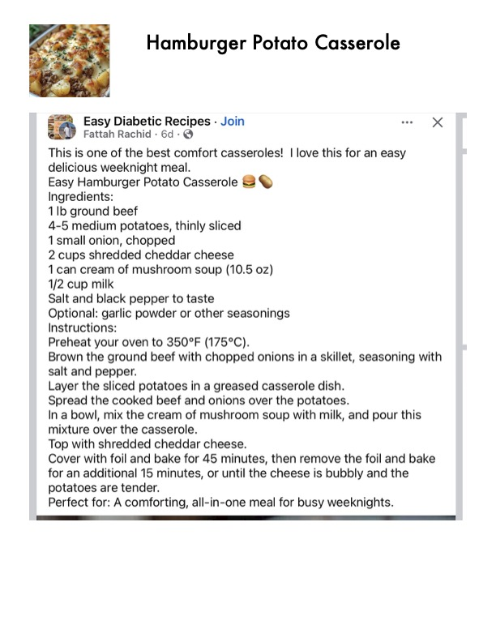

Easy Hamburger Potato Casserole

Original cookbook page 700
A comforting, all-in-one meal with ground beef, sliced potatoes, and cheese. Perfect for busy weeknights. Recipe from Easy Diabetic Recipes by Fattah Rachid.
Prep: 15 minutes • Cook: 60 minutes • Total: 1 hour 15 minutes
Ingredients
- 1 lb ground beef
- 4–5 medium potatoes, thinly sliced
- 1 small onion, chopped
- 2 cups shredded cheddar cheese
- 1 can cream of mushroom soup (10.5 oz)
- ½ cup milk
- Salt and black pepper to taste
- Optional: garlic powder or other seasonings
Instructions
- Preheat your oven to 350°F (175°C).
- Brown the ground beef with chopped onions in a skillet, seasoning with salt and pepper.
- Layer the sliced potatoes in a greased casserole dish.
- Spread the cooked beef and onions over the potatoes.
- In a bowl, mix the cream of mushroom soup with milk, and pour this mixture over the casserole.
- Top with shredded cheddar cheese.
- Cover with foil and bake for 45 minutes, then remove the foil and bake for an additional 15 minutes, or until the cheese is bubbly and the potatoes are tender.
📝 Recipe Notes
Perfect for a comforting, all-in-one meal for busy weeknights. From Easy Diabetic Recipes. Bake at 350°F (175°C).
Recipe #700 from collection